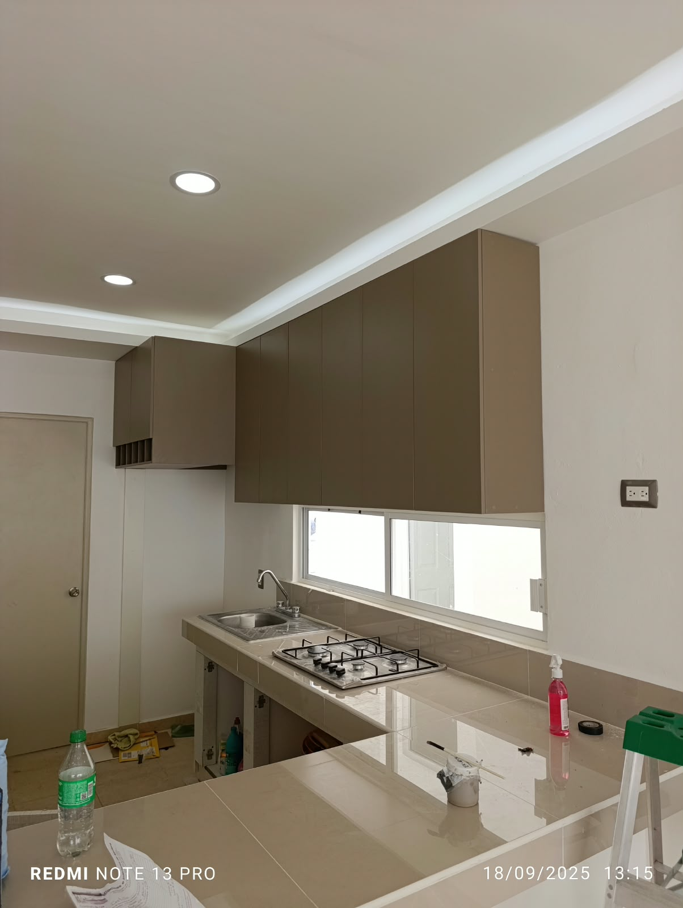
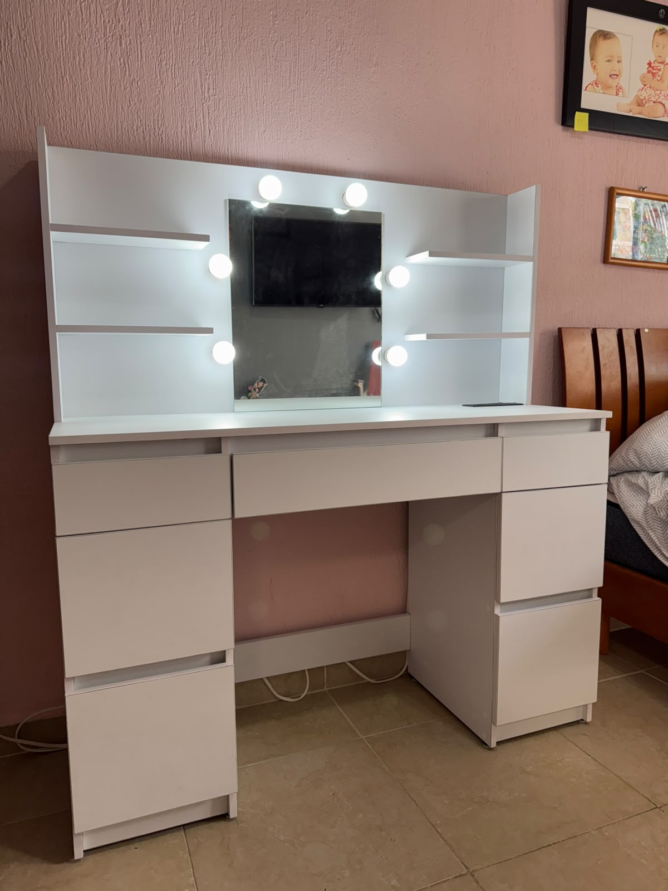

Cocinas integrales, closets, puertas y muebles sobre diseño. Confección de muebles con atención personal de principio a fin — del levantamiento de medidas a la instalación.

Cada proyecto se diseña y fabrica a la medida exacta del espacio. Estas son las categorías de trabajo más solicitadas.
Fotos reales de trabajos entregados. Toca cualquier imagen para verla en grande.

KinTro Carpintero, a cargo de Ramón M. Quintero, se dedica a la confección de muebles y carpintería residencial en Cancún: cocinas integrales, closets, puertas y piezas especiales sobre diseño.
Cuéntanos qué necesitas por WhatsApp — cocina, closet, puertas o un mueble especial — y te enviamos una cotización.